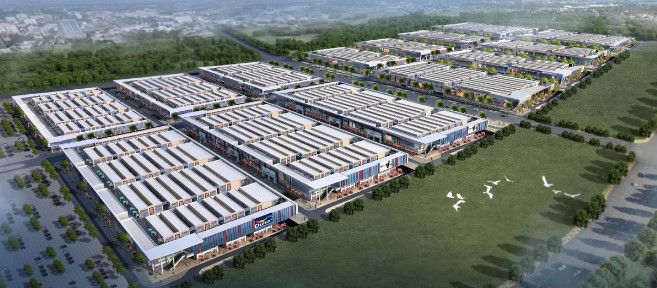

重庆华南城位于重庆市巴南区南彭的重庆公路物流基地，东邻渝湘高速，西接渝黔高速，南至外环高速，北到内环快速路。重庆华南城规划建筑面积约1350万平方米，计划总投资超过200亿元，首期规划建筑面积超过400万平方米，首期计划投资超过100亿元人民币。重庆华南城建成后，将大大降低企业的物流成本和交易成本，将增加约5-10万个创业机会，20-30万个就业机会，形成一座商贸物流新城，助推重庆作为国家中心城市的竞争力和辐射力。
项目共分为四大功能区
1、展示交易区
涵盖建材家居、五金机电、汽摩汽配、纺织服装、小商品、酒店用品、茶叶副食、奥特莱斯、好百年等各类交易市场和购物中心，将引进十几万家中小企业，数十万种产品，为采购商和供应商提供一站式采购对接平台，打造全行业的商品集散基地。
2、物流仓储区
沿南部绕城高速与铁路线布局，利用现代化的管理模式，根据不同业态及商品的仓储需求特点，进行科学规划，合理布局，构建物流电子信息平台，保证物流作业的快速、准确、高效。
3、中央公园商业休闲区
涵盖商业、CBD、会议会展、酒店、休闲、娱乐等业态，为入驻商家提供全方位的商业配套，形成重庆华南城的商业中心。
4、配套生活区
提供多样化精致户型和优美的居住环境，满足商户的生活居住需求。真正形成一座活力之城，区别于传统商贸区的白天繁华夜晚空城。